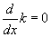
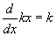
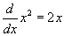
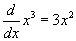
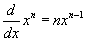
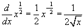
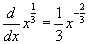
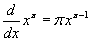
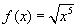
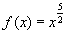

This device cannot display Java animations. The above is a substitute static image
In the above applet, there is a pull-down menu at the top to select which function you would like to explore.
The selected function is plotted in the left window and its derivative on the right.
1. A constant function
The initial example shows a constant function f (x) = k (which is a power function with n = 0). Initially k is set to 1. The function is a horizontal line and is hiding behind the red tangent line. Move the x slider and watch the cross hair move. What is the derivative function? Move the k slider; does the derivative change? The derivative of a constant function is always 0, or

2. A line
Select the second example from the drop down menu, which graphs a line through the origin with slope k. As in the previous example, the red tangent line is right on top of the function. Move the x slider; what is the derivative function, and how does it relate to k? Move the k slider; how does the derivative change? The derivative of a line through the origin is a constant function equal to the slope of the line, or

This makes sense, because the derivative tells you the slope of the graph of a function, and a line has constant slope everywhere.
3. A parabola
Select the third example, showing a parabola. What is its derivative? Move the x slider and convince yourself that the derivative function at a specific x gives the slope of the parabola at that point (the k slider is not used in this example). What is the equation of the derivative (hint: set x = 1 makes it easy to find the slope of the derivative function)? The derivative of a simple parabola is a line with slope of 2, or

4. A cubic function
Select the fourth example, showing a cubic. What is its derivative? Move the x slider and convince yourself that the derivative function at a specific x gives the slope of the cubic at that point (the k slider is not used in this example). What is the equation of the derivative (hint: set x = 1 makes it easy to find the slope of the derivative function). The derivative of a simple cubic is a simple parabola scaled by 3, or

5. A quartic function
Select the fifth example, showing a quartic. What does the derivative look like? It is, in fact,
Do you notice any pattern emerging in these derivatives? Is the derivative of a power function also a power function? What happens to the exponent when you find the derivative? What is the constant multiplier on the derivative? You may have noticed the following shortcut for finding the derivative of a power function, called the power rule:
Power Rule

This says that, to find the derivative function of a simple power function, just bring the exponent out in front as a constant multiplier, and subtract 1 from the exponent.
6. Power function with integer exponent
Select the sixth example. Here, k is the exponent and takes on integer values from -5 to 5. Does our power rule hold for all of these values? Move the k slider, especially examining k = 0 and negative values of k. In fact, the power rule does hold for integer values of the exponent, including 0 and negative integers. You may have noticed that the graphing software mistakenly tries to connect the left and right halves of the graph for negative odd exponents;
this shouldn't be there and is a limitation of the software.
7. Power function with real exponent
Select the seventh example. This is the same, except that the k slider takes on non-integer values. Does the rule still hold? Initially k = 1/2 to graph a square root function. Since our rule says to subtract 1 from the exponent, we get

So the power rule works for the square root function.
Type "1/3" into the k input box to get a graph of the cube root function. The derivative looks strange, but it is just the power rule again:

Set
x = 0; what is the value of the derivative? The cube root function has a vertical tangent here, so the derivative is undefined. Try other values for
k that are simple fractions. Notice that when the denominator is odd, you get both a positive and negative side to the graph, while for even denominators you only get a positive side (after simplifying your fractional exponent, of course; 2/6 has an even denominator, but it reduces to 1/3). Note also that sometimes the graphing software mistakenly connect the left and right sides of the function and/or the derivative.
Move the k slider to pick other real values for the exponent. The software tries to turn these into reduced fractional exponents, if it can, so some values may have both left and right hand sides. The power rule still works.
Type "pi" in for k and 1 in for x. Does the power rule still work? In fact it does work for all real numbers; in this case

Consider the the derivative of

This is simple if you rewrite square roots (and other roots) using exponents:

Then just use the power rule to find the derivative.
Other differentiation topics
(C) 2011 Copyright Math Open Reference.
All rights reserved